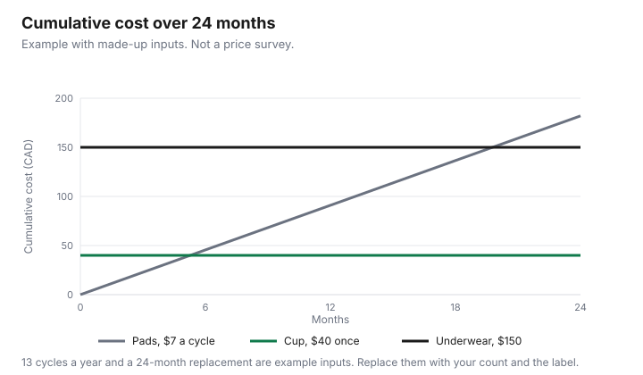

Personal Care · Canada
Menstrual Product Costs in Canada: Disposable vs Reusable per Cycle, and Free Access Programs
Menstrual products are a repeating cost, and they are easy to leave off a household list because they are not groceries and not rent. This page prices a cycle with an example of made-up inputs, then puts two Canadian rules beside the arithmetic: the GST/HST zero-rating the CRA has administered since 1 July 2015, and the federal Menstrual Equity Fund pilot described in a 14 Sep 2026 release. It does not rank pads or cups. An offer type is disclosed. A product that is zero-rated is not automatically a medical expense. That test is on the medical expense guide for personal care.
Key takeaways
- Cost per cycle is the price divided by the cycles you get. The chart is an example with made-up inputs: pads at $7 a cycle, a $40 cup, and $150 of underwear, over 24 months.
- The CRA’s 2015 questions-and-answers page zero-rates sanitary napkins, tampons, sanitary belts, menstrual cups, and other similar products marketed exclusively for feminine hygiene, from 1 July 2015. Wipes and deodorants are named as not included. Provincial sales tax can still apply.
- Whether a disc or period underwear is “other similar” is a question for the CRA. This page does not decide it.
- The 14 Sep 2026 Women and Gender Equality Canada release describes free products through Food Banks Canada and community organizations. It does not print an end date for the extended pilot.
- Use the replacement date on the product you buy.
Cost per cycle: pads, tampons, cups, discs, period underwear
A cycle cost is what you spend for one period, counting only the products you use. Pads and tampons are usually a package price divided by the number of pads or tampons you use that cycle.
A cup, a disc, or period underwear is an upfront price spread over the cycles you get before you replace it. If you stop using it, the cycles you did not get do not count. The example with made-up inputs uses 13 cycles a year, which is a round count so the chart can be drawn. Your count may be 10 or 14. Write yours in the blank row.
Pads at a made-up $7 a cycle are $91 a year and $182 over 24 months, because 13 times $7 is $91 and two years are $182. A cup at a made-up $40, replaced at a made-up 24 months, stays $40 on the chart. Five pairs of underwear at a made-up $30 are $150 upfront. Tampons in the table use a made-up $8 a cycle. A disc uses a made-up $45. None of those numbers was on a shelf on 29 Sep 2026. A larger count at a warehouse is only cheaper per cycle if you will use the count. The Costco household guide is that bulk test for other goods.
The GST/HST exemption since 2015
The CRA’s questions-and-answers page on the Notice of Ways and Means Motion concerning GST/HST and feminine hygiene products says the Notice, tabled 28 May 2015, proposed to zero-rate products marketed exclusively for feminine hygiene purposes. For that Notice, the products include sanitary napkins, tampons, sanitary belts, menstrual cups, or other similar products.
Not included are deodorants, douches, sprays, syringes, and feminine wipes. Zero-rated means no GST/HST is charged, because the rate is 0 percent. The page says suppliers could stop charging as of the proposed effective date of 1 July 2015, and that the CRA was administering the measure on the basis of the Notice. Provincial sales tax is outside that GST/HST change. The page says to ask the province.
Cups are named. A disc and period underwear are not named in the sentences this guide is using. They might fall under “other similar products” if they are marketed exclusively for feminine hygiene. That is the CRA’s phrase, not a conclusion from this page. Ask the CRA before you treat a listing as zero-rated or as taxable. The zero-rating does not make the product a medical expense. Keep those questions apart.
Store brands and bulk
A store brand and a name brand are the same arithmetic: price divided by the number of pads or tampons you will use, at the absorbency you actually need. This page does not say they perform the same.
If a cheaper box leaks, the extra product you use is part of the cycle cost. The household store-brand guide is the method for paper towels and detergent. Do not import a paper-towel result into this aisle.
Bulk and a delivery subscription are optional. A schedule that sends a box whether you need it is a cost. The rules for Amazon’s program are on the Subscribe and Save guide. The family grocery guide is where a repeating household line should sit so the cycle is not an surprise.
Reusable payback period
Payback, in this example, is the upfront price divided by the disposable cost per cycle. A $40 cup against $7 pads is 40 divided by 7, or about 5.7 cycles.
At the example’s 13 cycles a year, that is a little over five months. Underwear at $150 against the same $7 is about 21.4 cycles, which is nearly 20 months at 13 cycles a year. Those crossings are arithmetic on made-up inputs. They move as soon as your price or your cycle count moves. They also assume you keep using the reusable for that whole stretch and that you do not buy a second one.
A reusable that costs more per cycle than pads is still a valid choice for reasons this page does not price, such as waste or comfort. The chart is only the dollars. Do not let the chart talk you into a product you will not use. The second table holds the tax and the program, which are not payback math.
| Product | Upfront in the example | Per cycle | Lifespan used in the example | 24-month total |
|---|---|---|---|---|
| Pads | None beyond the cycle | $7 | One cycle | 26 × $7 = $182 |
| Tampons | None beyond the cycle | $8 | One cycle | 26 × $8 = $208 |
| Cup | $40 | $40 over 26 cycles, about $1.54 | 24 months, made up | $40 |
| Disc | $45 | $45 over 26 cycles, about $1.73 | 24 months, made up | $45 |
| Period underwear | 5 × $30 = $150 | $150 over 26 cycles, about $5.77 | 24 months, made up | $150 |
| Your products |
Free access: workplaces, schools and the Menstrual Equity Fund pilot
Free product in the federal release is a distribution program, not a line you claim on a tax return. On 14 Sep 2026, Women and Gender Equality Canada published a release in Mississauga.
It says the Menstrual Equity Fund pilot has had a total investment of nearly $90 million, and the quick facts say total funding increased from an initial $17.9 million to $89.8 million. The minister announced the impact of $60 million to extend the national pilot, delivered by Food Banks Canada. The release says the pilot has delivered more than 124 million free menstrual products through Food Banks Canada and affiliated food banks and community organizations. It says recipients reported missing fewer days of school and work. It also says six menstrual equity organizations provided nearly 450 education resources, reaching 70,000 people.
The quick facts give the funding steps: September 2023, $17.9 million from Budget 2022 to Food Banks Canada; February 2024, $5 million, including northern access and education; September 2024, $5 million to restock urban sites and education; February 2025, $1.9 million for education organizations pursuing expansion until March 2026; September 2025, Food Banks Canada received $57 million to extend the pilot, from a December 2024 Fall Economic Statement commitment that allocated $60 million. The release does not print an end date for that extension. The March 2026 date is the education line from February 2025, not an end date for product distribution. A 2023 Environics Research survey for the department, quoted in the release, says one in six (17 percent) of Canadians who menstruate had experienced period poverty, rising to one in four (25 percent) if household income was under $40,000, and that one in five (20 percent) said they may not afford products at some point in the next 12 months from that survey. Those figures are the release’s, not a new survey for this page.
Workplaces and schools are not given a national duty in that release. Ask your employer and your school or school board what they supply, if anything. This guide does not cite a provincial statute that requires product in every washroom, so it does not name one. If your province has a rule, it will be on the province’s page. Local access through a food bank or community partner is the channel the release describes. Call ahead. Supply is not guaranteed by a sentence on a federal news release.
| Rule or program | What the page says | What it does not say |
|---|---|---|
| GST/HST | Zero-rated from 1 July 2015 for the products the Notice names, administered by the CRA on the basis of the Notice | It does not remove provincial sales tax. It does not list discs or underwear by name |
| Menstrual Equity Fund pilot | Products through Food Banks Canada and community organizations. Funding steps and the $60 million extension are in the 14 Sep 2026 release | No end date for the extension. Not an employer benefit you invoice |
| Work and school | The release says recipients reported missing fewer days of school and work | It does not require your workplace or school to stock products. Ask them |
Care and replacement of reusables
Follow the care steps printed on the product you bought. This guide does not cite a Health Canada page that sets a boil time or a year limit for a cup, a disc, or underwear, so it does not invent one.
Replace the product when the instructions say to, when it is damaged, or when it no longer works for you. A made-up 24-month life in the chart is only an input. If you replace sooner, the 24-month total rises by the new purchase. If the instructions say the product lasts longer, the chart’s flat line is too short and the payback is better than the example.
Shared bathrooms and travel days are practical limits, not a second price. A cup you cannot clean where you are is not the cheap option that week. Count a backup disposable in the cycle if you use one. The backup belongs in the pad or tampon row, added to the reusable, not instead of the upfront price.

Sources
- CRA, questions and answers on the Notice of Ways and Means Motion concerning GST/HST and feminine hygiene products, as of 29 Sep 2026. Zero-rating, the product list, the exclusions, and 1 July 2015 as the date the CRA administered from the Notice. Provincial sales tax is left to the province.
- Nearly $90 million and $89.8 million total, the $60 million extension, Food Banks Canada, more than 124 million products, the funding timeline, the March 2026 education line, and the Environics 2023 figures of 17 percent, 25 percent under $40,000, and 20 percent. No end date for the extended pilot is printed.
- Cycle counts, prices, and the 24-month replacement are an example with made-up inputs.
Frequently asked questions
What's the cheapest menstrual product over time?
Whichever product you will actually use, once the upfront price is spread over the cycles you get from it. In the example with made-up inputs, pads at $7 a cycle cost more by month 24 than a $40 cup that is not replaced, and a $150 underwear set takes longer to cross. Those prices are not a shelf survey. A product you stop using in month two never earns the payback on the chart.
Are menstrual products taxed in Canada?
The CRA’s questions-and-answers page on the 2015 Notice of Ways and Means Motion says feminine hygiene products are zero-rated for GST/HST, so the tax rate on a qualifying supply is 0 percent, for supplies the CRA administered from 1 July 2015. Named products are sanitary napkins, tampons, sanitary belts, menstrual cups, and other similar products marketed exclusively for feminine hygiene, and deodorants, douches, sprays, syringes, and feminine wipes are not included. Provincial sales tax can still apply, so ask the province.
How long does a menstrual cup last?
As long as the product’s own instructions say to keep using it; this guide cites no Health Canada lifespan. The example assumes a made-up 24-month replacement so the chart has an end point. If your label says sooner, the payback shortens. If you replace it earlier because it no longer fits, use that date, not the illustration.
Where can I get free menstrual products in Canada?
The 14 Sep 2026 release from Women and Gender Equality Canada describes the Menstrual Equity Fund pilot as products delivered by Food Banks Canada and community organizations, with no end date printed for the extended pilot and no employer invoice. Ask a local food bank or community partner if that channel is open near you, and ask your workplace or school what they supply. This guide does not cite a national rule that they must.
Are store-brand pads and tampons as good?
This page does not rank them. Compare the count in the package, the absorbency marked on the box, and the price per pad or per tampon you will use, because a store brand and a name brand are the same arithmetic. The household store-brand guide is the method for paper goods, not a test of menstrual products. If a product leaks or irritates, it is not the cheap option.
Researched and drafted with AI assistance and fact-checked against official Canadian sources. How we create content.
Disclosure: Amazon.ca storefronts are an offer type if you later shop for a reusable or a supply. Saving Optimizer may earn a commission if a partner link is added later. No partnership is claimed with Amazon or a brand. Education only. This page does not name a best cup, disc, pad, or underwear.